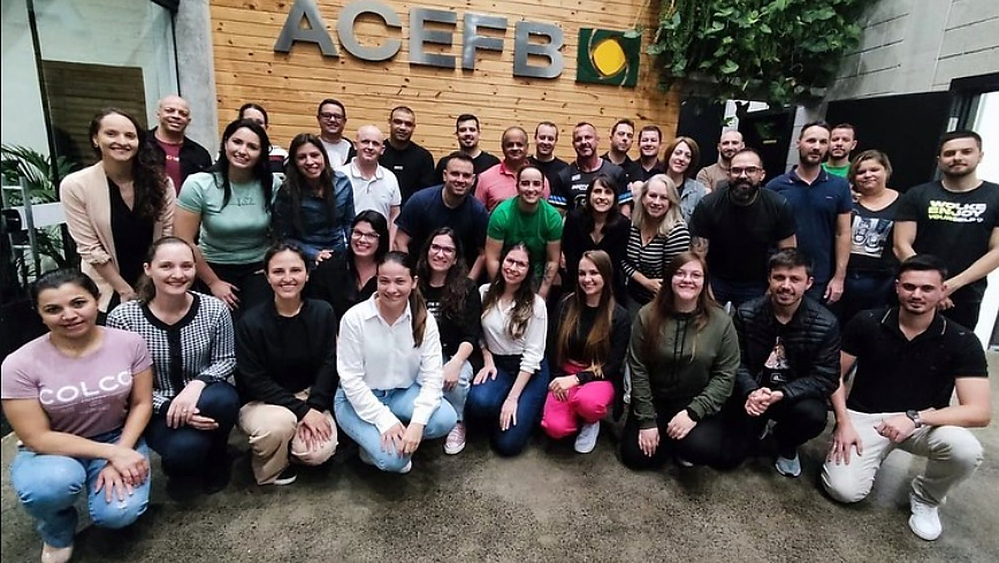

Abertura da vaga
Você nos procura e abre a vaga: a função, o momento da empresa e as dificuldades para preenchê-la.
e Seleção.
A pergunta que esta frente responde: como colocar as pessoas certas nos lugares certos? Curadoria e estruturação de vagas para reduzir erros de contratação, rotatividade e perda de desempenho.

Colocamos as pessoas certas nos lugares certos para reduzir erros de contratação, rotatividade e perda de desempenho.
Responda com o cenário real, não com o desejado. Ao final, você vê a pontuação da sua empresa neste tema e pode acessar o resultado completo, com os pontos de atenção.
Você nos procura e abre a vaga: a função, o momento da empresa e as dificuldades para preenchê-la.
O que a empresa precisa, quanto quer pagar e para quando. Expectativa e realidade alinhadas antes de buscar candidatos.
Empresa, função e atividades analisadas para confirmar se o que se pede é o que a empresa realmente precisa.
Uma base grande de currículos, com acesso aos sites de vagas que existem na internet.
Triagem dos currículos por critérios definidos e entrevistas investigativas, buscando evidência e não discurso.
Os candidatos são avaliados nas três dimensões, com instrumentos adequados e testes de perfil validados.
Quem passa no processo segue com parecer técnico ao gestor. Acompanhamos a agenda da visita à empresa e, se preciso, a conversa com o gestor.
Acompanhamento do processo de integração e da experiência: 15, 30 e 60 dias (90, conforme o contrato de experiência).
Do operacional à gestão: buscamos profissionais para as posições operacionais, para o front tático e técnico, para especialistas e para cargos de gestão.
Analisamos muito além do currículo técnico. Mapeamos o perfil comportamental do candidato para garantir que ele tenha compatibilidade real com a cultura da sua empresa.
Utilizamos testes de perfil validados para reduzir a margem de erro na contratação.
Se o profissional contratado não se adaptar ou deixar a empresa dentro do prazo de garantia, realizamos um novo processo seletivo sem custo adicional de honorários.
Requisitos técnicos e comportamentais alinhados com a diretoria antes de abrir o processo.
Somente finalistas com aderência avaliada chegam à sua mesa.
Evidências coletadas, pontos de atenção e limites explícitos de interpretação.
Apoio à decisão, para que a escolha final tenha base e seja transferível.
Roteiro de chegada com responsável, metas e acompanhamento em 15, 30 e 60 dias (90, conforme o contrato de experiência).
O padrão de seleção fica registrado e pode ser repetido pela sua equipe.
Escolhemos o formato conforme o estágio do negócio e a capacidade de sustentação. Valores e prazos são definidos após o alinhamento inicial.
“A Evolve já nos ajudou em vários processos seletivos aqui, sempre com muita assertividade. Eu digo assim, nada na vida da gente é 100%, né? Mas eu tô quase que apostando minhas fichas que tá sendo quase que 100% essa questão que a gente fez esse recrutamento, dessas últimas pessoas que foram entrando, mas foi dito e feito como a Evolve falou, foi, como ela desenhou o mapa da pessoa, ele foi acontecendo, sabe? Então, eu vejo que a chance de dar certo é muito grande já por esse norte que a gente está tendo agora.”
Solicite um orçamento para a estruturação do seu processo seletivo ou para uma vaga específica.
Provisório E-mail, telefone e endereço institucionais entram aqui quando os dados oficiais forem liberados.